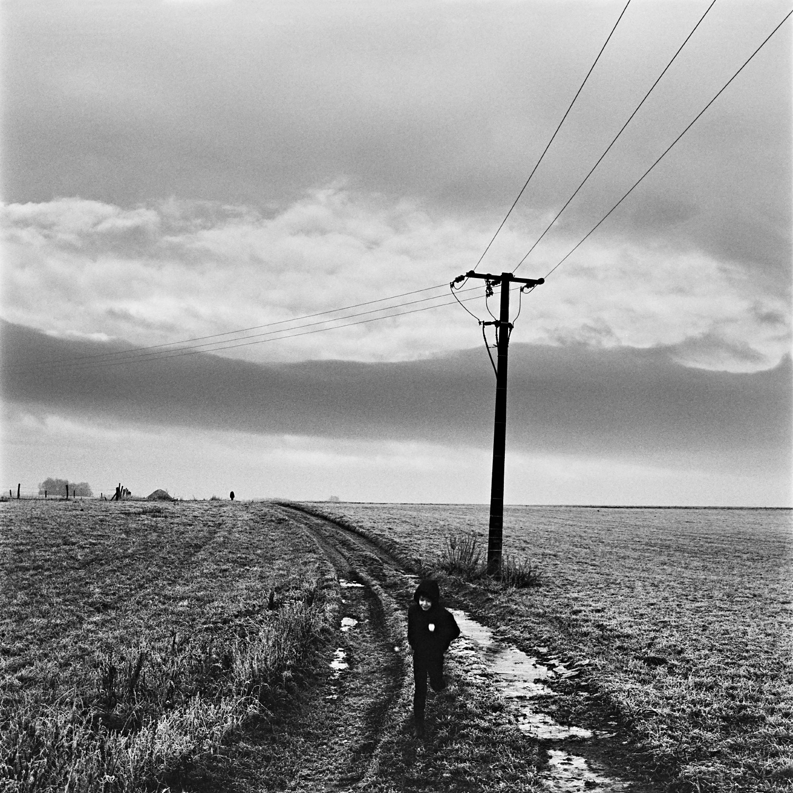
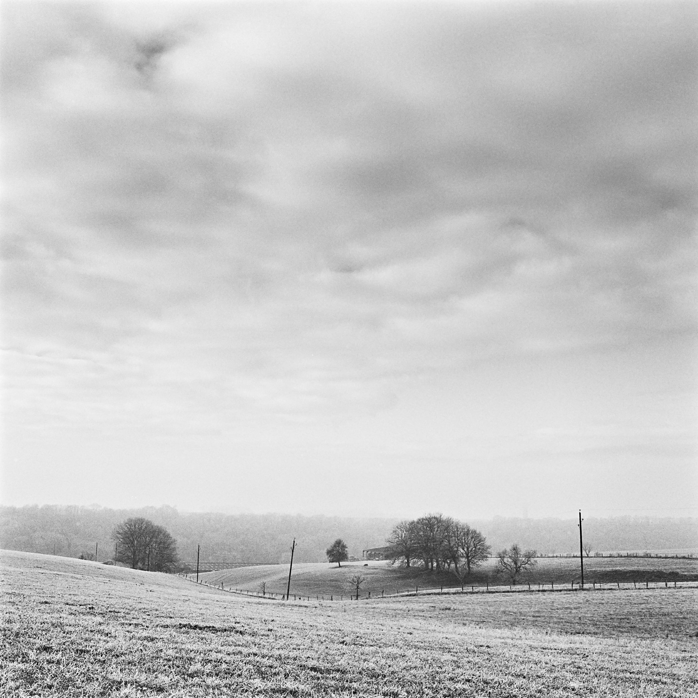
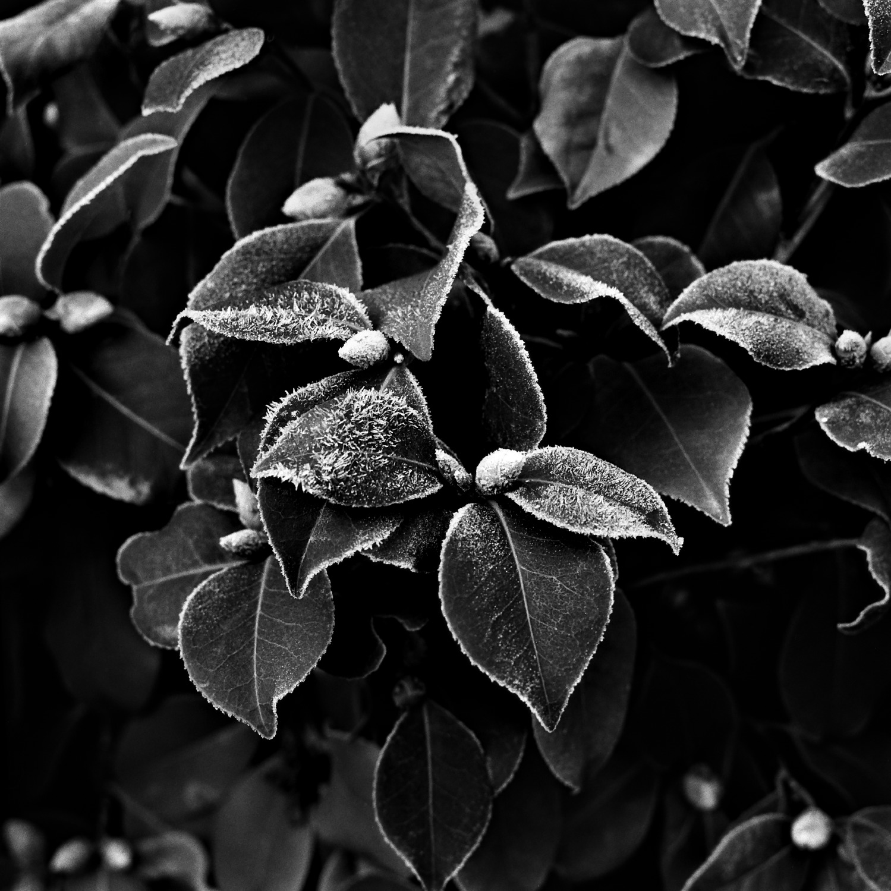

lab
11/06/2021
Kodak Xtol
I’ve been shooting and processing black and white for many years now, for my personal work but also sometimes for editorials or commercials. Of course, I’ve tried and used several types of films and developers. But my favorites have always been Kodak Tmax 100 and Kodak Tri-X.
Regarding developers, I used to prefer liquid concentrates such as Ilfosol or Kodak HC-110 because I thought it was easier to mix and I’ve always favored the one shot solutions.
I alwThen I wanted to do some experiments with other developers and finally came across Kodak Xtol that I really love !!!


Created by Kodak in 1996, Xtol in not exactly a newborn. But it’s not the most popular developer considaring the threads you can find on internet. Also the fact that it’s only available in packaging to make 5 liters of stock solution, make it perhaps less userfriendly than other developers.
Here are some of the reasons :
1. Kodak Xtol is easy to use. All you have to do is to mix the powder at room temperature to make the 5 liters of stock solution. It’s recommended to mix it with distilled water for better storage capacity. Then you divide the solution into five bottles of 1 liter each, completely full (no air) and tightly closed.
2. The storage capacity following these recommendations is very good. Kodak gives 12 months for the stock solution, but according to my experience you can still use it after 18 months if it is stored in a cool dark place.
3. Xtol is often told “the environment friendly” developer. It is true as it uses ascorbic acid and Phenidone rather than Metol or Hydroquinone.
4. You can shoot at box speed ! Well maybe it seems anecdotic, but for myself I like the idea. There are a lot of developers with which you need to over-expose your film. With Xtol you don’t. And it works really great also for pushing (and I like that too !).
The best is to use it as a one shot solution with a 1+1 dilution. All you need to have in mind is to use at least 100ml of stock solution per film (135 or 120). This makes it a quite economical developer (it leaves some $$ to buy your film). I am using it with a “home made” rotary processor and result is just fine.
5. But what about the result ? As I told you I mainly use it for Kodak Tmax 100 and Tri-X. For the Tmax it works really great. The grain is nice and the gradation too. You will get good shadow details and above all, because it can be crucial with Tmax, a very good highlight control. Kodak Xtol is also known for its sharpness, and according to my experiments it is quite true. I personally use Tmax 100 @ 200 and process a bit longer to get a little more contrast. Wth the Tri-X it works also very well. Maybe it won’t beat the Tri-x / D76 combo or Rodinal but it works well with a lot of different speeds so it’s very comfortable to work with.


All the pictures I’ve used to illustrate this article are from recent series, « les limites du territoire », « One piece of my mind » and the on going series « A simple life » initiated in 2020. You can find here more information about my photography work.
I hope this will be useful for choosing your Film/Dev combo. Keep in mind that expirments are good, but the most important is to take pictures. There’re so many possibilities that a all life will not be enough to test everything. So stick to a receipe for a some time, just to make sure you have made the most of it. It takes time to tune a process…
A good alternative to Kodak Xtol is Adox XT-3 available from the German website Fotoimpex. I’ve tested it recently and I was really pleased with both the results and the ease to use it. One of the good thing with this X-tol clone is that you can buy it to make 1 or 5 liters. It’s nice to have the choice as 5 liters of stock solution can be too long to use for people who do not shoot a lot of rolls. Choosing the 1 liter package make it a bit more expensive of course. Also, the powder is much easier to mix and safier too (according to Adox) due to the captura technology.
I’ve used it to process Tmax 100 and Tri-x and both of them looks great with this developer. All the qualities I like with X-tol were there, even a bit better !
Have fun with films !!!